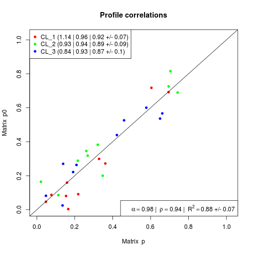

DSection(Y, p0, nSamples, groups = NULL, nBurnIn = 4 * nSamples, W0 = max(nrow(p0), 10), W_proposal = 100, samplep = TRUE, summarize = TRUE, verbose = FALSE)
p0 must be positive and add up to one.p0. Defines the peakedness of
Dirichlet density around p0. NOTE: keep W0 >= T.TRUE) or not (FALSE). SUGGESTED USE:
sample from the posterior (samplep = 1).A list with the following elements:
MCData results from the MCMC estimation. x_LS Standard-least square estimate. groups factor defining the groups of samples, if any was provided. call the call to DSection. parameters a list of some of the parameters used in the estimation. p0 initial prior on proportions.
The DSection algorithm performs gene expression deconvolution when priors on proportions are available, using a Markov Chain Monte Carlo approach Erkkila et al. (2010).
In CellMix, this method is registered with the key
'DSection', and is can be applied to gene
expression data via the function ged.
This function uses the RcppOctave package to run the original Matlab code in Octave. The documentation was extracted from the Matlab source file, that can be found in the CellMix package "scripts/DSection" subdirectory.
The Matlab code requires the Octave packages statistics and optim to run properly. These packages can be downloaded from Octave-forge:
http://sourceforge.net/projects/octave/files/Octave Forge Packages/Individual Package Releases/
and installed in Octave with:
pkg install '
or in R
install.extras('CellMix', 'octave:DSection')
http://informatics.systemsbiology.net/DSection/ http://www.cs.tut.fi/~erkkila2/software/dsection/index.html
Erkkila T, Lehmusvaara S, Ruusuvuori P, Visakorpi T,
Shmulevich I and Lahdesmaki H (2010). "Probabilistic
analysis of gene expression measurements from
heterogeneous tissues." _Bioinformatics (Oxford,
England)_, *26*(20), pp. 2571-7. ISSN 1367-4811,
#' # random global expressionx <- rmix(3, 50, 10)dim(x)Features Samples Components 50 10 3# extract true proportionsp <- coef(x)# add noise to proportionsp0 <- scoef(abs(p + rmatrix(p, dist=rnorm, sd=0.15)))# check how noisy this makes the proportion estimatesprofplot(p, p0)
## Not run:# # Requires some extra Octave packages to be installed (it defines `gamfit`)# res <- DSection(exprs(x), p0, nSamples=100, nBurnIn=1L)# profplot(p, res$MCData$p)# ## End(Not run)